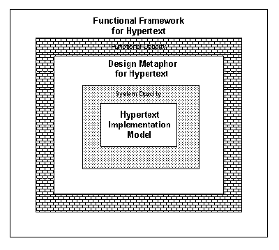

Hypermedia – General Hypertext Framework
2.7 General Hypertext Framework
Whereas most models have focused on design metaphors and implementation abstractions, very little work has been in the area of a general framework for hypertext functionality. Rao and Turoff observed that “Hypertext should be treated as a general purpose tool with approaches to handling nodes, links, and retrieval, that fits within the context of any application and conveys common meanings to users. To accomplish this, we need a comprehensive framework for hypertext based on a cognitive model that allows for the representation of the complete range of human intellectual abilities.” [Rao & Turoff, 1990]. They proposed such a framework based on Guilford’s Structure of the Intellect Model (see Figure 6.5). They contend that hypertext systems tend to suffer from a lack of coherence due to ambiguity in meanings assigned to nodes and links.
This framework classified nodes into six different semantic types – detail, collection, proposition, summary, issue, and observation. Links can be categorized into major types – Convergent links and Divergent Links. Convergent links can be classified into specification, membership, association, path, alternative and inference links. These links help in focusing or narrowing the pattern of relationships between ideas. Divergent links are classified into elaboration, opposition, tentative, branch, lateral, and extrapolation links. These links expand or broaden relationships between ideas.

Figure 6.5: General Framework for Hypertext Functionality [Rao & Turoff, 1990].
Rao and Turoff believe that such a comprehensive framework would help designers develop better interface metaphors and implementation models for hypertext systems. They concluded that sixteen different hypertext systems which they reviewed fall under this framework (in their own limited ways) and that their semantic morphology could be extended to all future systems. Such a taxonomy would also help collaborative hypertext where members of a group could contribute adequately and understand each other’s judgements in carrying out the group objective. A first step towards the implementation of a hypertext system based on such a framework is to develop an appropriate design metaphor/user interface that would reduce functional opacity (mismatch between the framework and the metaphor) and system opacity (mismatch between the metaphor and the implementation model). That is, the region called design metaphor in Figure 6.5 could be expanded on all four sides thus “squeezing out” the shaded regions named functional opacity and system opacity.